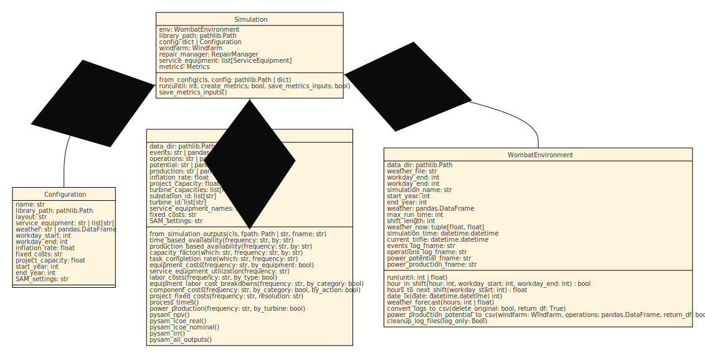

Simulation API
Contents
Simulation API#
{kind=link}
Configuration#
- class wombat.core.simulation_api.Configuration(name: str, library: str | Path, layout: str, service_equipment: Sequence | str | int | float, weather: str | pd.DataFrame, workday_start, workday_end, inflation_rate, project_capacity, fixed_costs: dict | str | Path = None, port: dict | str | Path = None, start_year: int = None, end_year: int = None, SAM_settings: str = None, port_distance: int | float = None, non_operational_start: str | datetime.datetime | None = None, non_operational_end: str | datetime.datetime | None = None, reduced_speed_start: str | datetime.datetime | None = None, reduced_speed_end: str | datetime.datetime | None = None, reduced_speed: float = 0.0, random_seed: int | None = None, random_generator: np.random._generator.Generator | None = None)#
The
Simulationconfiguration data class that provides all the necessary definitions.- Parameters
name (str) – Name of the simulation. Used for logging files.
library (str) – The data directory. See
wombat.simulation.WombatEnvironmentfor more details.layout (str) – The windfarm layout file. See
wombat.Windfarmfor more details.service_equipment (str | list[str]) – The equpiment that will be used in the simulation. See
wombat.core.ServiceEquipmentfor more details.weather (str) – The weather profile to be used. See
wombat.simulation.WombatEnvironmentfor more details.workday_start (int) – Starting hour for a typical work shift. Can be overridden by equipment-specific settings.
workday_end (int) – Ending hour for a typical work shift. Can be overridden by equipment-specific settings.
inflation_rate (float) – The annual inflation rate to be used for post-processing.
fixed_costs (str) – The file name for the fixed costs assumptions.
project_capacity (int | float) – The total capacity of the wind plant, in MW.
port (dict | str | Path) – The port configuration file or dictionary that will be used to setup a tow-to-port repair strategy, default None.
port_distance (int | float) – The simulation-wide daily travel distance for servicing equipment. This should be used as a base setting when multiple or all servicing equipment will be operating out of the same base location, but can be individually modified.
start_year (int) – Start year of the simulation. The exact date will be determined by the first valid date of this year in
weather.end_year (int) – Final year of the simulation. The exact date will be determined by the last valid date of this year in
weather.SAM_settings (str) – The SAM settings file to be used for financial modeling, optional, by default None.
non_operational_start (str | datetime.datetime | None) – The starting month and day, e.g., MM/DD, M/D, MM-DD, etc. for an annualized period of prohibited operations. When defined at the environment level, an undefined or later starting date will be overridden for all servicing equipment and any modeled port, by default None.
non_operational_end (str | datetime.datetime | None) – The ending month and day, e.g., MM/DD, M/D, MM-DD, etc. for an annualized period of prohibited operations. When defined at the environment level, an undefined or earlier ending date will be overridden for all servicing equipment and any modeled port, by default None.
reduced_speed_start (str | datetime.datetime | None) – The starting month and day, e.g., MM/DD, M/D, MM-DD, etc. for an annualized period of reduced speed operations. When defined at the environment level, an undefined or later starting date will be overridden for all servicing equipment and any modeled port, by default None.
reduced_speed_end (str | datetime.datetime | None) – The ending month and day, e.g., MM/DD, M/D, MM-DD, etc. for an annualized period of reduced speed operations. When defined at the environment level, an undefined or earlier ending date will be overridden for all servicing equipment and any modeled port, by default None.
reduced_speed (float) – The maximum operating speed during the annualized reduced speed operations. When defined at the environment level, an undefined or faster value will be overridden for all servicing equipment and any modeled port, by default 0.0.
random_seed (int | None) – The random seed to be passed to a universal NumPy
default_rngobject to generate Weibull random generators, by default None.random_generator (np.random._generator.Generator | None) – An optional numpy random generator that can be provided to seed a simulation with the same generator each time, in place of the random seed. If a
random_seedis also provided, this will override the random seed, by default None.
- non_operational_end: str | datetime.datetime | None#
- non_operational_start: str | datetime.datetime | None#
- port_distance: int | float#
- random_generator: numpy.random._generator.Generator | None#
- random_seed: int | None#
- reduced_speed: float#
- reduced_speed_end: str | datetime.datetime | None#
- reduced_speed_start: str | datetime.datetime | None#
Simulation Interface#
- class wombat.core.simulation_api.Simulation(library_path: str | pathlib.Path, config: wombat.core.simulation_api.Configuration, random_seed: Optional[int] = None, random_generator: Optional[numpy.random._generator.Generator] = None)#
The primary API to interact with the simulation methodologies.
- Parameters
library_path (str) – The path to the main data library.
config (Configuration | dict | str) –
- One of the following:
A pre-loaded
ConfigurationobjectA dictionary ready to be converted to a
ConfigurationobjectThe name of the configuration file to be loaded, that will be located at:
library_path/ config /config
random_seed (int | None) – The random seed to be passed to a universal NumPy
default_rngobject to generate Weibull random generators, by default None.random_generator (np.random._generator.Generator | None) – An optional numpy random generator that can be provided to seed a simulation with the same generator each time, in place of the random seed. If a
random_seedis also provided, this will override the random seed, by default None.
- classmethod from_config(config: str | pathlib.Path | dict | wombat.core.simulation_api.Configuration)#
Creates the
Simulationobject only the configuration contents as either a full file path to the configuration file, a dictionary of the configuration contents, or pre-loadedConfigurationobject.- Parameters
config (str | Path | dict | Configuration) – The simulation configuration, see
Configurationfor more details on the contents. The following is a description of the acceptable contents:str: the full file path of the configuration yaml file.dict: a dictionary with the requried configuration settings.Configuration: a pre-createdConfigurationobject.
- Raises
TypeError – Raised if
configis not one of the three acceptable input types.- Returns
A ready-to-run
Simulationobject.- Return type
- random_generator: numpy.random._generator.Generator | None#
- random_seed: int | None#
- run(until: Optional[Union[int, float, simpy.events.Event]] = None, create_metrics: bool = True, save_metrics_inputs: bool = True)#
Calls
WombatEnvironment.run()and gathers the results for post-processing. Seewombat.simulation.WombatEnvironment.runorsimpy.Environment.runfor more details.- Parameters
until (Optional[int | float | Event], optional) – When to stop the simulation, by default None. See documentation on
simpy.Environment.runfor more details.create_metrics (bool, optional) – If True, the metrics object will be created, and not, if False, by default True.
save_metrics_inputs (bool, optional) – If True, the metrics inputs data will be saved to a yaml file, with file references to any larger data structures that can be reloaded later. If False, the data will not be saved, by default True.
- save_metrics_inputs() None#
Saves the inputs for the Metrics initialization with either a direct copy of the data or a file reference that can be loaded later.
Metrics Computation#
For example usage of the Metrics class and its associated methods, please see the examples documentation page
- class wombat.core.post_processor.Metrics(data_dir: str | pathlib.Path, events: str | pandas.core.frame.DataFrame, operations: str | pandas.core.frame.DataFrame, potential: str | pandas.core.frame.DataFrame, production: str | pandas.core.frame.DataFrame, inflation_rate: float, project_capacity: float, turbine_capacities: list[float], substation_id: str | list[str], turbine_id: str | list[str], substation_turbine_map: dict[str, dict[str, list[str]]], service_equipment_names: str | list[str], fixed_costs: Optional[str] = None, SAM_settings: Optional[str] = None)#
The metric computation class for storing logs and compiling results.
- classmethod from_simulation_outputs(fpath: pathlib.Path | str, fname: str) wombat.core.post_processor.Metrics#
Creates the Metrics class from the saved outputs of a simulation for ease of revisiting the calculated metrics.
- Parameters
fpath (Path | str) – The full path to the file where the data was saved.
fname (Path | str) – The filename for where the data was saved, which should be a direct dictionary mapping for the Metrics initialization.
- Returns
The class object.
- Return type
- time_based_availability(frequency: str, by: str) pandas.core.frame.DataFrame#
Calculates the time-based availabiliy over a project’s lifetime as a single value, annual average, or monthly average for the whole windfarm or by turbine.
Note
This currently assumes that if there are multiple substations, that the turbines are all connected to multiple.
- Parameters
frequency (str) – One of “project”, “annual”, “monthly”, or “month-year”.
by (str) – One of “windfarm” or “turbine”.
- Returns
The time-based availability at the desired aggregation level.
- Return type
pd.DataFrame
- production_based_availability(frequency: str, by: str) pandas.core.frame.DataFrame#
Calculates the production-based availabiliy over a project’s lifetime as a single value, annual average, or monthly average for the whole windfarm or by turbine.
Note
This currently assumes that if there are multiple substations, that the turbines are all connected to multiple.
- Parameters
frequency (str) – One of “project”, “annual”, “monthly”, or “month-year”.
by (str) – One of “windfarm” or “turbine”.
- Returns
The production-based availability at the desired aggregation level.
- Return type
pd.DataFrame
- capacity_factor(which: str, frequency: str, by: str) pandas.core.frame.DataFrame#
Calculates the capacity factor over a project’s lifetime as a single value, annual average, or monthly average for the whole windfarm or by turbine.
Note
This currently assumes that if there are multiple substations, that the turbines are all connected to multiple.
- Parameters
which (str) – One of “net” or “gross”.
frequency (str) – One of “project”, “annual”, “monthly”, or “month-year”.
by (str) – One of “windfarm” or “turbine”.
- Returns
The capacity factor at the desired aggregation level.
- Return type
pd.DataFrame
- task_completion_rate(which: str, frequency: str) float | pandas.core.frame.DataFrame#
Calculates the task completion rate over a project’s lifetime as a single value, annual average, or monthly average for the whole windfarm or by turbine.
Note
This currently assumes that if there are multiple substations, that the turbines are all connected to multiple.
- Parameters
which (str) – One of “scheduled”, “unscheduled”, or “both”.
frequency (str) – One of “project”, “annual”, “monthly”, or “month-year”.
- Returns
The task completion rate at the desired aggregation level.
- Return type
float | pd.DataFrame
- equipment_costs(frequency: str, by_equipment: bool = False) pandas.core.frame.DataFrame#
Calculates the equipment costs for the simulation at a project, annual, or monthly level with (or without) respect to equipment utilized in the simulation. This excludes any port fees that might apply, which are included in:
port_fees.- Parameters
frequency (str) – One of “project”, “annual”, “monthly”, or “month-year”.
by_equipment (bool, optional) – Indicates whether the values are with resepect to the equipment utilized (True) or not (False), by default False.
- Returns
- Returns pandas
DataFramewith columns: year (if appropriate for frequency)
month (if appropriate for frequency)
then any equipment names as they appear in the logs
- Returns pandas
- Return type
pd.DataFrame
- Raises
ValueError – If
frequencyis not one of “project”, “annual”, “monthly”, or “month-year”.ValueError – If
by_equipmentis not one ofTrueorFalse.
- service_equipment_utilization(frequency: str) pandas.core.frame.DataFrame#
Calculates the utilization rate for each of the service equipment in the simulation as the ratio of total number of days each of the servicing equipment is in operation over the total number of days it’s present in the simulation. This number excludes mobilization time and the time between visits for scheduled servicing equipment strategies.
Note
For tugboats in a tow-to-port scenario, this ratio will be near 100% because they are considered to be operating on an as-needed basis per the port contracting assumptions
- Parameters
frequency (str) – One of “project” or “annual”.
- Returns
The utilization rate of each of the simulation
SerivceEquipment.- Return type
pd.DataFrame
- Raises
ValueError – If
frequencyis not one of “project” or “annual”.
- vessel_crew_hours_at_sea(frequency: str, by_equipment: bool = False, vessel_crew_assumption: dict[str, float] = {}) pandas.core.frame.DataFrame#
Calculates the total number of crew hours at sea that occurred during a simulation at a project, annual, or monthly level that can be broken out by servicing equipment. This includes time mobilizing, delayed at sea, servicing, towing, and traveling.
Note
This metric is intended to be used for offshore wind simulations.
- Parameters
frequency (str) – One of “project”, “annual”, “monthly”, or “month-year”.
by_equipment (bool, optional) – Indicates whether the values are with resepect to each tugboat (True) or not (False), by default False.
vessel_crew_assumption (dict[str, float], optional) – Dictionary of vessel names (
ServiceEquipment.settings.name) and number of crew members aboard to trannsform the results from vessel hours at sea to crew hours at sea.
- Returns
Returns a pandas
DataFramewith columns:year (if appropriate for frequency)
month (if appropriate for frequency)
Total Crew Hours at Sea
{ServiceEquipment.settings.name} (if broken out)
- Return type
pd.DataFrame
- Raises
ValueError – If
frequencyis not one of “project”, “annual”, “monthly”, or “month-year”.ValueError – If
by_equipmentis not one ofTrueorFalse.ValueError – If
vessel_crew_assumptionis not a dictionary.
- number_of_tows(frequency: str, by_tug: bool = False, by_direction: bool = False) float | pandas.core.frame.DataFrame#
Calculates the total number of tows that occurred during a simulation at a project, annual, or monthly level that can be broken out by tugboat.
- Parameters
frequency (str) – One of “project”, “annual”, “monthly”, or “month-year”.
by_tug (bool, optional) – Indicates whether the values are with resepect to each tugboat (True) or not (False), by default False.
by_direction (bool, optional) – Indicates whether the values are with respect to the direction a turbine is towed (True) or not (False), by default False.
- Returns
Returns either a float for whole project-level costs or a pandas
DataFramewith columns:year (if appropriate for frequency)
month (if appropriate for frequency)
total_tows
total_tows_to_port (if broken out)
total_tows_to_site (if broken out)
{ServiceEquipment.settings.name}_total_tows (if broken out)
{ServiceEquipment.settings.name}_to_port (if broken out)
{ServiceEquipment.settings.name}_to_site (if broken out)
- Return type
float | pd.DataFrame
- Raises
ValueError – If
frequencyis not one of “project”, “annual”, “monthly”, or “month-year”.ValueError – If
by_tugis not one ofTrueorFalse.ValueError – If
by_directionis not one ofTrueorFalse.
- labor_costs(frequency: str, by_type: bool = False) float | pandas.core.frame.DataFrame#
Calculates the labor costs for the simulation at a project, annual, or monthly level that can be broken out by hourly and salary labor costs.
- Parameters
frequency (str) – One of “project”, “annual”, “monthly”, or “month-year”.
by_type (bool, optional) – Indicates whether the values are with resepect to the labor types (True) or not (False), by default False.
- Returns
Returns either a float for whole project-level costs or a pandas
DataFramewith columns:year (if appropriate for frequency)
month (if appropriate for frequency)
total_labor_cost
hourly_labor_cost (if broken out)
salary_labor_cost (if broken out)
- Return type
float | pd.DataFrame
- Raises
ValueError – If
frequencyis not one of “project”, “annual”, “monthly”, or “month-year”.ValueError – If
by_typeis not one ofTrueorFalse.
- equipment_labor_cost_breakdowns(frequency: str, by_category: bool = False) pandas.core.frame.DataFrame#
Calculates the producitivty cost breakdowns for the simulation at a project, annual, or monthly level that can be broken out to include the equipment and labor components.
Note
Doesn’t produce a value if there’s no cost associated with a “reason”.
- Parameters
frequency (str) – One of “project”, “annual”, “monthly”, or “month-year”.
by_category (bool, optional) – Indicates whether to include the equipment and labor categories (True) or not (False), by default False.
- Returns
- Returns pandas
DataFramewith columns: year (if appropriate for frequency)
month (if appropriate for frequency)
reason
hourly_labor_cost (if by_category ==
True)salary_labor_cost (if by_category ==
True)total_labor_cost (if by_category ==
True)equipment_cost (if by_category ==
True)total_cost (if broken out)
- Returns pandas
- Return type
pd.DataFrame
- Raises
ValueError – If
frequencyis not one of “project”, “annual”, “monthly”, or “month-year”.ValueError – If
by_categoryis not one ofTrueorFalse.
- component_costs(frequency: str, by_category: bool = False, by_action: bool = False) pandas.core.frame.DataFrame#
Calculates the component costs for the simulation at a project, annual, or monthly level that can be broken out by cost categories. This will not sum to the total cost because it is does not include times where there is no work being done, but costs are being accrued.
Note
It should be noted that the costs will include costs accrued from both weather delays and shift-to-shift delays. In the future these will be disentangled.
- Parameters
frequency (str) – One of “project”, “annual”, “monthly”, or “month-year”.
by_category (bool, optional) – Indicates whether the values are with resepect to the various cost categories (True) or not (False), by default False.
by_action (bool, optional) – Indicates whether component costs are going to be further broken out by the action being performed–repair, maintenance, and delay–(True) or not (False), by default False.
- Returns
Returns either a float for whole project-level costs or a pandas
DataFramewith columns:year (if appropriate for frequency)
month (if appropriate for frequency)
component
action (if broken out)
materials_cost (if broken out)
total_labor_cost (if broken out)
equipment_cost (if broken out)
total_cost
- Return type
float | pd.DataFrame
- Raises
ValueError – If
frequencyis not one of “project”, “annual”, “monthly”, or “month-year”.ValueError – If
by_categoryis not one ofTrueorFalse.ValueError – If
by_actionis not one ofTrueorFalse.
- project_fixed_costs(frequency: str, resolution: str) pandas.core.frame.DataFrame#
Calculates the fixed costs of a project at the project and annual frequencies at a given cost breakdown resolution.
- Parameters
frequency (str) – One of “project” or “annual”, “monthly”, “.
resolution (st) – One of “low”, “medium”, or “high”, where the values correspond to:
low:
FixedCosts.resolution["low"], corresponding to itemized costs.medium:
FixedCosts.resolution["medium"], corresponding to the overarching cost categories.high:
FixedCosts.resolution["high"], corresponding to a lump sum.
These values can also be seen through the
FixedCosts.hierarchy
- Returns
The project’s fixed costs as a sum or annualized with high, medium, and low resolution as desired.
- Return type
pd.DataFrame
- Raises
ValueError – If
frequencynot one of “project” or “annual”.ValueError – If
resolutionmust be one of “low”, “medium”, or “high”.
- opex(frequency: str) pandas.core.frame.DataFrame#
Calculates the project’s OpEx for the simulation at a project, annual, or monthly level.
- Parameters
frequency (str) – One of project, annual, monthly, or month-year.
- Returns
The project’s OpEx broken out at the desired time resolution.
- Return type
pd.DataFrame
- process_times() pandas.core.frame.DataFrame#
Calculates the time, in hours, to complete a repair/maintenance request, on both a request to completion basis, and the actual time to complete the repair.
- Returns
category (index): repair/maintenance category
time_to_completion: total number of hours from the time of request to the time of completion
process_time: total number of hours it took for the equipment to complete
the request.
downtime: total number of hours where the operations were below 100%.
N: total number of processes in the category.
- Return type
pd.DataFrame
- power_production(frequency: str, by: str = 'windfarm', units: str = 'gwh') float | pandas.core.frame.DataFrame#
Calculates the power production for the simulation at a project, annual, or monthly level that can be broken out by turbine.
- Parameters
frequency (str) – One of “project”, “annual”, “monthly”, or “month-year”.
by (str) – One of “windfarm” or “turbine”.
units (str) – One of “gwh”, “mwh”, or “kwh”.
- Returns
Returns either a float for whole project-level costs or a pandas
DataFramewith columns:year (if appropriate for frequency)
month (if appropriate for frequency)
total_power_production
<turbine_id>_power_production (if broken out)
- Return type
float | pd.DataFrame
- Raises
ValueError – If
frequencyis not one of “project”, “annual”, “monthly”, or “month-year”.ValueError – If
by_turbineis not one ofTrueorFalse.
- npv(frequency: str, discount_rate: float = 0.025, offtake_price: float = 80) pandas.core.frame.DataFrame#
Calculates the net present value of the windfarm at a project, annual, or monthly resolution given a base discount rate and offtake price.
Note
This function will be improved over time to incorporate more of the financial parameter at play, such as PPAs.
- Parameters
frequency (str) – One of “project”, “annual”, “monthly”, or “month-year”.
discount_rate (float, optional) – The rate of return that could be earned on alternative investments, by default 0.025.
offtake_price (float, optional) – Price of energy, per MWh, by default 80.
- Returns
The project net prsent value at the desired time resolution.
- Return type
pd.DataFrame
- pysam_npv() float | pandas.core.frame.DataFrame#
Returns the project-level after-tax net present values (NPV).
See here for more: https://nrel-pysam.readthedocs.io/en/master/modules/Singleowner.html#PySAM.Singleowner.Singleowner.Outputs.cf_project_return_aftertax_npv
Warning
PySAM functionality is currently disabled due to changes made in the new API that need to be remapped.
- Raises
NotImplementedError – Raised if a PySAM input file is not provided to run the:
model. –
- Returns
Final, project-level NPV, in $.
- Return type
float
- pysam_lcoe_real() float#
Returns the real levelized cost of energy (LCOE) from PySAM.
See here for more: https://nrel-pysam.readthedocs.io/en/master/modules/Singleowner.html#PySAM.Singleowner.Singleowner.Outputs.lcoe_real
Warning
PySAM functionality is currently disabled due to changes made in the new API that need to be remapped.
- Raises
NotImplementedError – Raised if a PySAM input file is not provided to run the: model.
- Returns
Real LCOE, in $/kW.
- Return type
float
- pysam_lcoe_nominal() float#
Returns the nominal levelized cost of energy (LCOE) from PySAM.
See here for more: https://nrel-pysam.readthedocs.io/en/master/modules/Singleowner.html#PySAM.Singleowner.Singleowner.Outputs.lcoe_nom
Warning
PySAM functionality is currently disabled due to changes made in the new API that need to be remapped.
- Raises
NotImplementedError – Raised if a PySAM input file is not provided to run the:
model. –
- Returns
Nominal LCOE, in $/kW.
- Return type
float
- pysam_irr() float#
Returns the project-level after-tax internal return rate (IRR).
See here for more: https://nrel-pysam.readthedocs.io/en/master/modules/Singleowner.html#PySAM.Singleowner.Singleowner.Outputs.cf_project_return_aftertax_irr
Warning
PySAM functionality is currently disabled due to changes made in the new API that need to be remapped.
- Raises
NotImplementedError – Raised if a PySAM input file is not provided to run the: model.
- Returns
Annual after-tax IRR value, in %.
- Return type
pd.DataFrame
- pysam_all_outputs() pandas.core.frame.DataFrame#
Returns all the possible PySAM outputs that are included in this module as columns in the following order.
NPV
Nominal LCOE
Real LOCE
IRR
Warning
PySAM functionality is currently disabled due to changes made in the new API that need to be remapped.
- Raises
NotImplementedError – Raised if a PySAM input file is not provided to run the: model.
- Returns
Project financial values values.
- Return type
pd.DataFrame